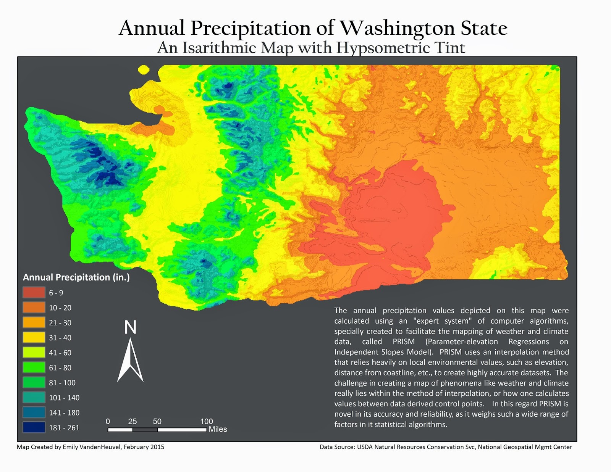

As previously stated, an isarithmic map is used to represent continuous datasets. These maps usually work best to visualize phenomena that are continuous, including temperature or precipitation. The above image is a hypothetical, generic isarithmic map. This map has no data associated with it, but is helpful to visualize how isarithmic maps can look. The map shows similar regions represented by different colors.
The above isarithmic map has real data associated with it. The map is showing the average precipitation for areas in the state of Iowa during the year 2018. The dark blue portions of the map represents regions with high precipitation, and the yellow portions of the map represents areas with low precipitation. The precipitation patterns of this map appear to start in a circle of high precipitation in the middle of the state, and lower precipitation values radiate out. This shows how effective isarithmic maps are at showing continuous data. The data is continuous throughout the regions indicated by different colors, and the continuous datasets are shown with the white lines. This data cannot easily be shown with other mapping methods, such as choropleth or bivariate mapping. The map below shows another example of an isarithmic map. This time, the map is showing the annual precipitation of Washington State, with data provided by the USDA. This map was created by Emily VandenHeuvel, in 2015.
